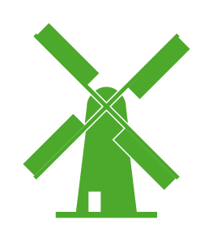
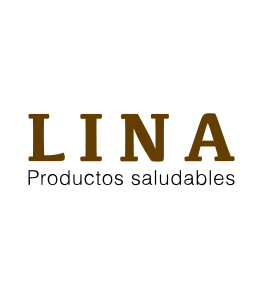

Debido al consumo exagerado de productos altamente procesados las personas tienden a perder una dieta equilibrada que a la larga puede afectar a su salud.La cantidad elevada de aditivos, conservantes y saborizantes por mencionar algunos hacen que el organismo este en constante esfuerzo lo cuál puede fomentar a la creación de alguna enfermedad. Es por ello que Lina ofrece productos saludables, sin gluten y vegano. Los productos al ser artesanales son hechos como si usted mismo lo hubiera hecho en casa.